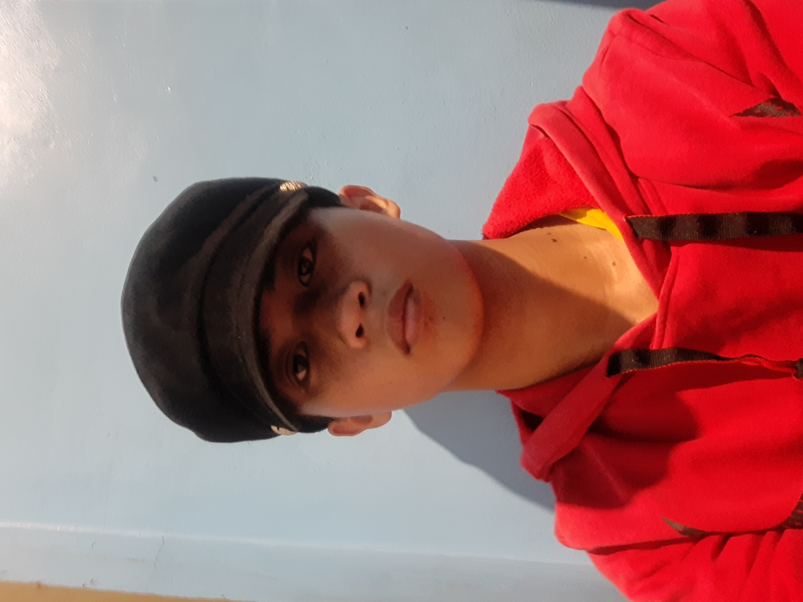

Hello I'm Kurt Nicholai A. Bolislis
About Me
Hello I'm Kurt Nicholai A. Bolislis
I'm a Student
Welcome to my domain.
Im currently studying Bachelor of Science in Entertainment Multimedia Computing Digital Animation Technology. A begginer webdeveloper, programmer and a digital artist.